ทุกขั้นทำด้วยพรอมต์ Copy & Paste ใน Claude Code และงานทั้งหมดเกิดใน container multi-account
vastai ของ Vast.aivastai ใน containerreadme.md→ Space / ← หรือปุ่มมุมขวาล่าง
O แล้วคลิกหน้าที่ต้องการ · F เต็มจอ
คลิกที่ภาพ · ภาพหน้าจอของผลแสดงเฉพาะส่วนบน คลิกเพื่อดูทั้งภาพ · คลิกอีกครั้งหรือ Esc เพื่อปิด
ปุ่ม คัดลอกพรอมต์ทั้งหมด ให้ข้อความเดียวกับ readme.md ตรงตัวอักษร
สไลด์ ตรวจผลของคุณ ต่อจากพรอมต์ของ LAB · ติ๊กได้ และจำค่าไว้ในเบราว์เซอร์นี้
ลิงก์สีน้ำเงินเปิดไฟล์ในโฟลเดอร์ของบท · เปิดสไลด์จากโฟลเดอร์ 01_VastAi_Skill
สกิล vastai ของ Vast.ai · กุญแจ 2 ดอก · เครื่องคิดเงินตอนไหน · เพดานราคาอยู่ในพรอมต์ · โมเดลใหญ่เกิน GPU จึงต้องบีบอัด
vastai ของ Vast.aivastai ทำงานได้เมื่อมีครบ 3 ชิ้น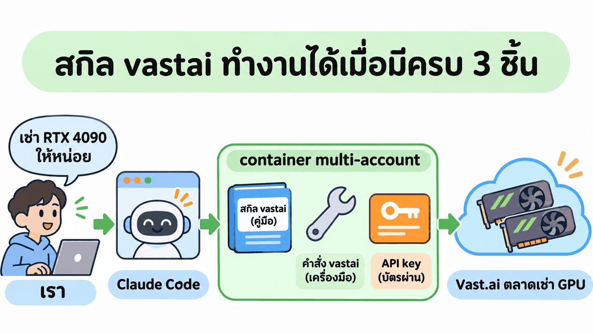
vastai — คู่มือที่บอก AI ว่าคำสั่งไหนใช้ทำอะไร (ไฟล์ SKILL.md)vastai (CLI) — โปรแกรมที่คุยกับ Vast.ai จริง · สกิลเรียกโปรแกรมนี้อยู่เบื้องหลังvastai ของ Vast.aivastaiติดตั้งด้วย npx skills add vast-ai/vast-cli --skill vastai
vastai (CLI)ติดตั้งด้วย curl -fsSL https://vast.ai/install.sh | bash
ติดตั้งด้วย vastai set api-key
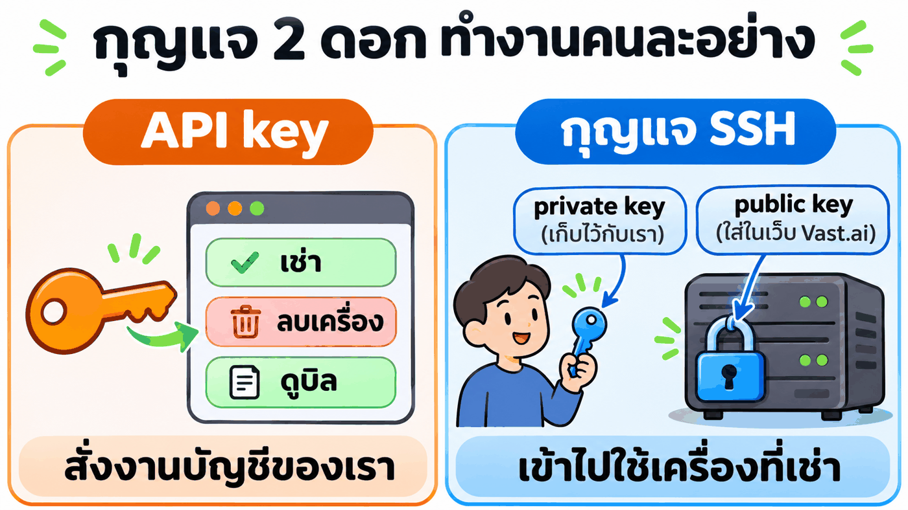
.env ในโฟลเดอร์ปัจจุบันDevtool_SSH/ ในโฟลเดอร์ปัจจุบันdevtoolSSH.pub · public keyเอาไปใส่ในเว็บ Vast.ai · เปิดเผยได้
devtoolSSH · private keyเก็บไว้กับเรา ใช้ตอน ssh · ห้ามส่งให้ใคร
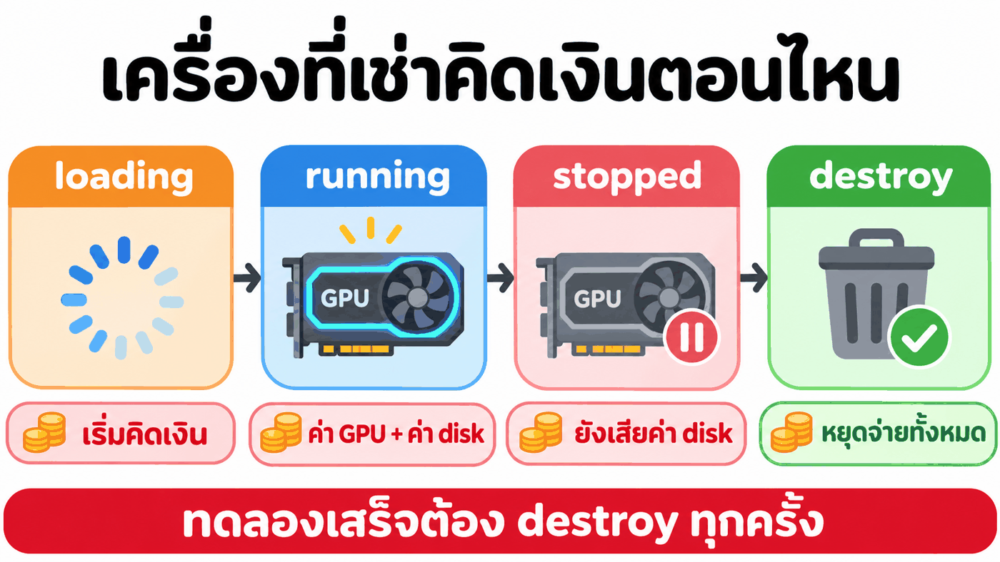
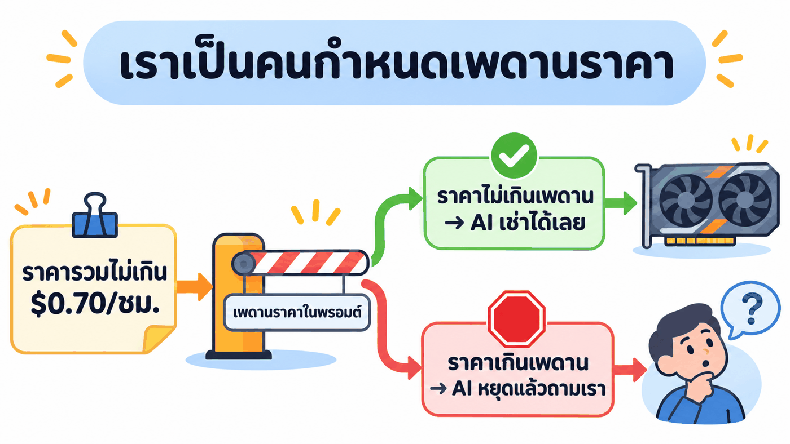
ทุกขั้นมี 2 ส่วน: พรอมต์ ที่คัดลอกไปวางใน Claude Code และ ผลที่ควรได้
เตรียมบัญชี Vast.ai · API key · กุญแจ SSH
เติมเครดิต $5–10
ติดตั้งสกิล vastai ใน container
ฟรี
ตั้งค่าบัญชีให้พร้อมเช่า
ฟรี
หาเครื่องและเปรียบเทียบราคา
ฟรี
เช่า RTX 4090 → ssh → ลบเครื่อง
≈ $0.02
เช่า RTX 5090 แล้วเปิด AI server (NInfer + Qwen)
≈ $0.9 ต่อชั่วโมง
ต่อแชทบอทร้านค้าเข้ากับ AI server แล้วทดสอบ 26 เคส
(เครื่องเดิม)
ปิดทุกอย่าง
หยุดเสียเงิน
LAB นี้ทำบนเว็บและบนเครื่องเราเอง ยังไม่ใช้ Claude Code
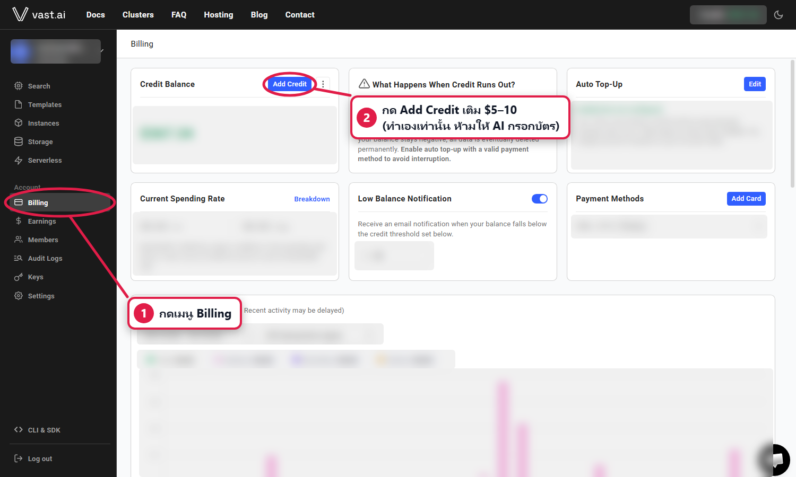
Devtool_SSH/Devtool_SSH/devtoolSSH.pub ด้วย Notepad แล้วคัดลอกทั้งบรรทัดที่ขึ้นต้นด้วย ssh-ed25519 AAAA…Devtool_SSH/devtoolSSH อยู่ใน repo นี้เพื่อความสะดวกในห้องเรียน ใครมี repo ก็เข้าเครื่องที่เราเช่าได้ระหว่างที่เครื่องยังเปิด → ลบเครื่องทันทีหลังใช้ และงานส่วนตัวให้สร้างกุญแจของตัวเอง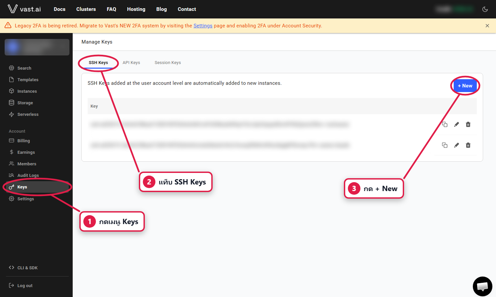
ภาพจริง: ① เมนู Keys → ② แท็บ SSH Keys → ③ + New
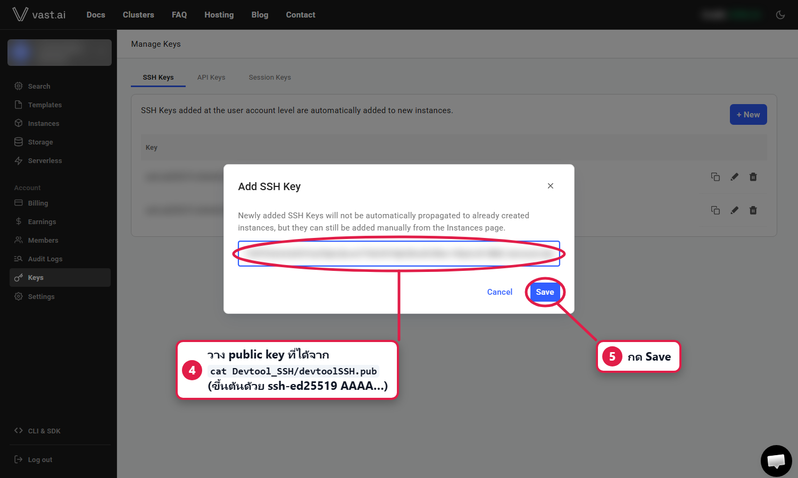
ภาพจริง: ④ วางบรรทัด ssh-ed25519 AAAA… → ⑤ Save
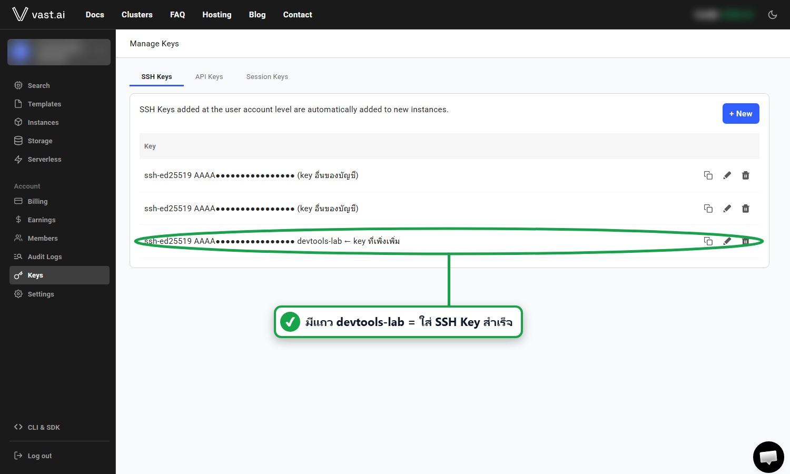
ภาพจริง: มีแถวใหม่ = ใส่กุญแจ SSH สำเร็จ
คลิกขวาที่โฟลเดอร์ 01_VastAi_Skill → Open Git Bash here
cd <ที่เก็บ repo>/03_week03/01_VastAi_Skill
ssh-keygen -t ed25519 -f Devtool_SSH/mykey -C my-vast-keyDevtool_SSH/: private key เก็บไว้ public key เอาไปใส่เว็บ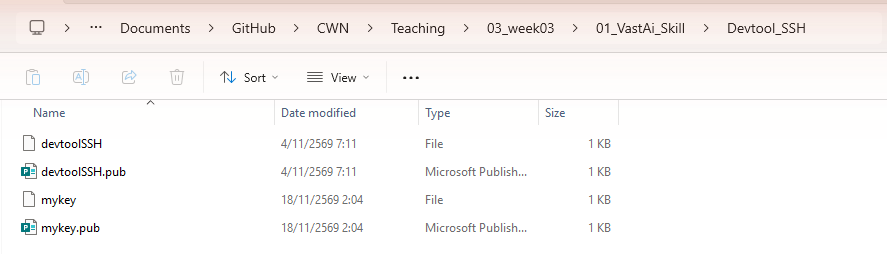
ได้ไฟล์ใหม่ 2 ไฟล์ในโฟลเดอร์ของบทนี้ — mykey (private key เก็บไว้) และ mykey.pub (public key เอาไปใส่เว็บตามขั้นที่ 2) · ใช้กุญแจของตัวเองแล้ว ให้เปลี่ยนคำว่า devtoolSSH ในพรอมต์ของ LAB ถัดไปเป็น mykey
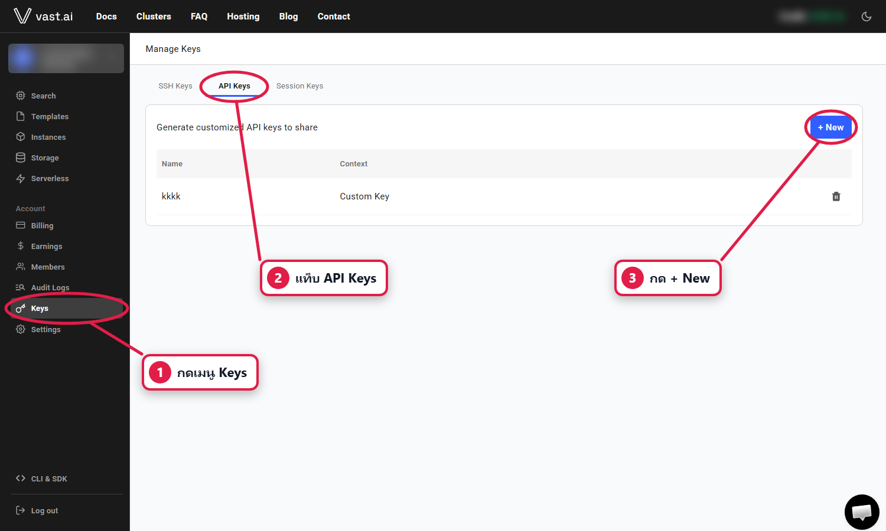
ภาพจริง: ① เมนู Keys → ② แท็บ API Keys → ③ + New
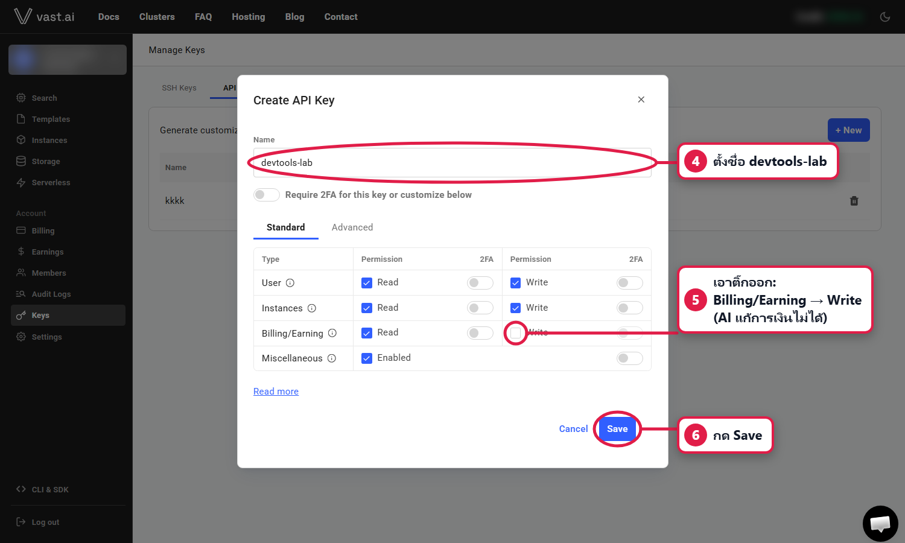
ภาพจริง: ④ ตั้งชื่อ → ⑤ เอาติ๊กออกที่ Billing/Earning → Write → ⑥ Save · AI เช่าและลบเครื่องได้ แต่แก้การเงินของบัญชีไม่ได้
.env ก่อนกด Closeภาพหน้าจอจริง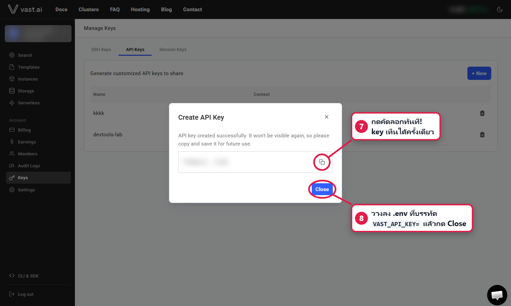
ภาพจริง: ⑦ กดคัดลอก ทันที (เห็นได้ครั้งเดียว) → ⑧ วางลง .env ก่อน แล้วค่อยกด Close · key ในภาพถูกเบลอไว้
.env ทันที เพราะเห็นได้ครั้งเดียวคัดลอกไฟล์ .env_example ในโฟลเดอร์ของบทนี้เป็น .env แล้วเปิดด้วย Notepad ใส่ key ที่คัดลอกมา
VAST_API_KEY=<key ที่คัดลอกมา>.env ไม่ถูก commitvastai ใน containerเปิด Claude Code ที่โฟลเดอร์ของบทนี้ แล้ววางพรอมต์
vastai ใน container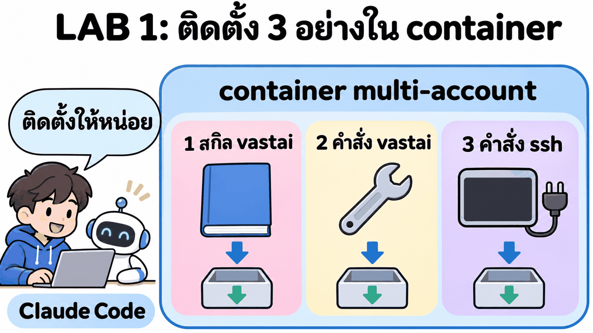
vastai ใน containervastaiCopy & Pasteทำงานใน container `multi-account` โฟลเดอร์ /workspace/vastai_lab (ถ้ายังไม่มีให้สร้าง)
ก่อนเริ่ม ดูว่าใน container มีสกิล vastai หรือไม่
- Claude: /root/ai-accounts/.Claude/shared/skills
- Codex: /root/ai-accounts/.Codex/shared/skills
ติดตั้งเฉพาะสิ่งที่ยังไม่มี ตามคู่มือของ Vast.ai (https://docs.vast.ai/guides/get-started/agents)
1. สกิล vastai: npx skills add vast-ai/vast-cli --skill vastai -y แล้วคัดลอกโฟลเดอร์สกิลไปไว้ใน path ทั้งสองข้างบน
2. คำสั่ง vastai (CLI): curl -fsSL https://vast.ai/install.sh | bash
3. คำสั่ง ssh: apt-get install -y openssh-client
สรุปเป็นตาราง: รายการ | ผล (มีอยู่แล้ว / เพิ่งติดตั้ง / ติดตั้งไม่ได้) | เวอร์ชันหรือ pathvastai ใน containervastai ใน container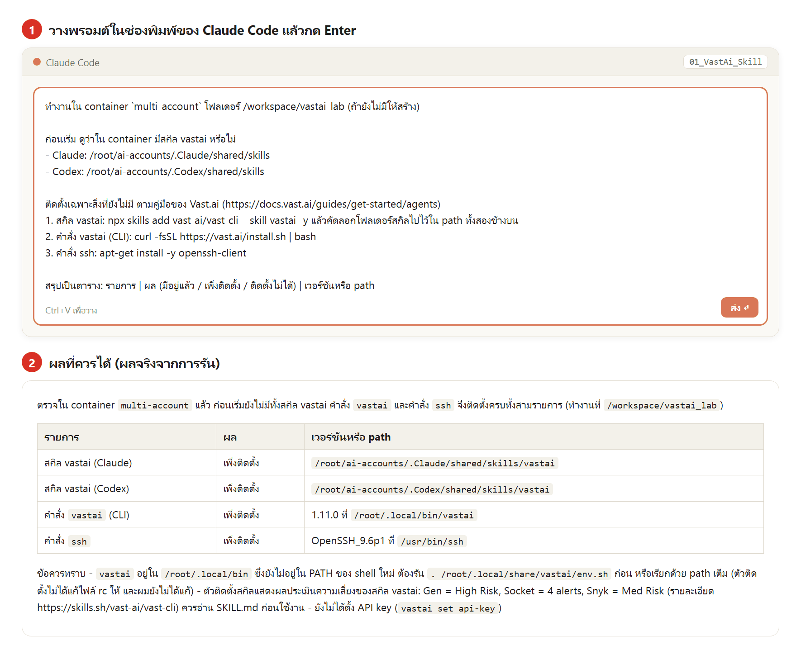
คลิกภาพเพื่อดูทั้งภาพใช้เวลาประมาณ 1 นาที
vastai ใน containercurl … | bash เพราะเป็นการรันสคริปต์จากอินเทอร์เน็ต · คำสั่งนี้มาจากคู่มือของ Vast.ai จึงกดอนุญาตได้ai-accounts จึงไม่หายเมื่อสร้าง container ใหม่ · คำสั่ง vastai กับ ssh อยู่ใน container ถ้าสร้าง container ใหม่ให้วางพรอมต์นี้ซ้ำ (ของที่มีอยู่แล้วจะถูกข้าม)LAB นี้นำกุญแจ 2 ดอกจาก LAB 0 เข้าไปใน container · ยังไม่เช่าเครื่องและไม่เสียเงิน
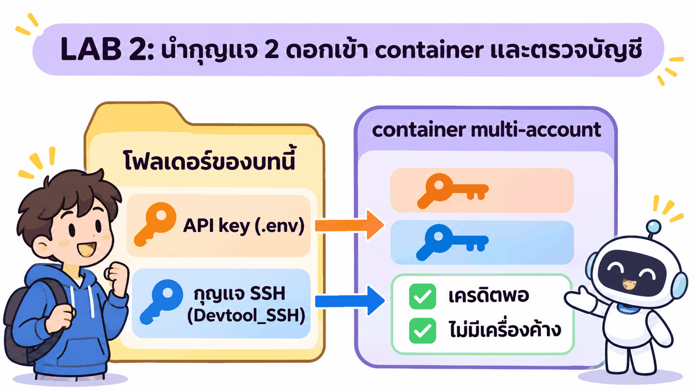
ทำงานใน container `multi-account` โฟลเดอร์ /workspace/vastai_lab ด้วยสกิล vastai
ตั้งค่าบัญชี Vast.ai ให้พร้อมเช่าเครื่อง
1. API key: ใช้ค่า VAST_API_KEY จากไฟล์ .env ในโฟลเดอร์ปัจจุบัน ตั้งด้วย vastai set api-key ห้ามแสดงค่า key
2. กุญแจ SSH: คัดลอกโฟลเดอร์ Devtool_SSH จากโฟลเดอร์ปัจจุบันเข้าไปที่ /workspace/vastai_lab แล้วตรวจว่า public key นี้ลงทะเบียนกับบัญชีแล้ว ถ้ายังให้ลงทะเบียน
3. ตรวจบัญชี: เครดิตคงเหลือ และเครื่องที่เปิดค้างอยู่
สรุปเป็นตาราง: รายการ | ผล ห้ามแสดงอีเมล key หรือ token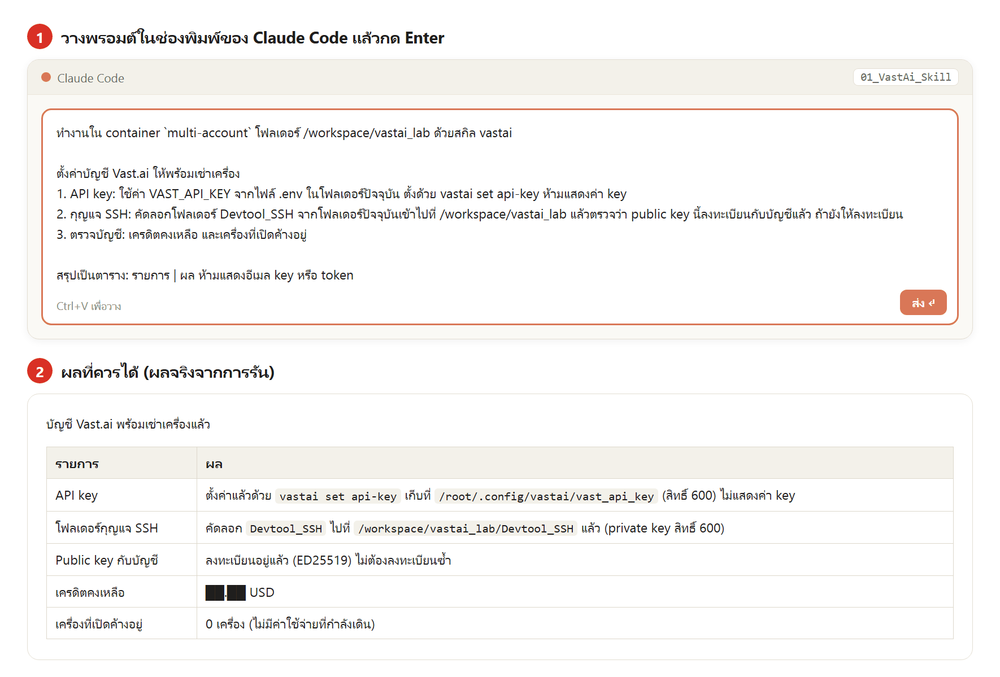
คลิกภาพเพื่อดูทั้งภาพใช้เวลาประมาณครึ่งนาที · ยอดเครดิตในภาพถูกปิดไว้
LAB นี้ไม่เช่าเครื่องและไม่เสียเงิน · ให้ AI ค้นตลาดตามเงื่อนไขของเรา แล้วเทียบราคาให้ดูก่อนตัดสินใจ
ทำงานใน container `multi-account` โฟลเดอร์ /workspace/vastai_lab ด้วยสกิล vastai
หาเครื่อง RTX 4090 1 ใบที่เช่าได้ตอนนี้ ยังไม่ต้องเช่า
- เงื่อนไข: verified · ต่อ ssh แบบ direct ได้ · ไม่เอาเครื่องในจีน
- ตารางที่ 1: 10 เครื่องที่ราคา GPU ต่อชั่วโมงถูกที่สุด เรียงจากถูกไปแพง แต่ละเครื่องแสดง ที่ตั้ง · ราคา GPU ต่อชั่วโมง · ค่า disk ต่อ GB ต่อเดือน · ค่าดาวน์โหลดต่อ GB · ความเร็วดาวน์โหลด · ความน่าเชื่อถือ
- ตารางที่ 2: คำนวณค่าใช้จ่ายรวมของงานตัวอย่าง (ใช้เครื่อง 1 ชั่วโมง · disk 50 GB · ดาวน์โหลดโมเดล 25 GB) ของ 10 เครื่องเดิม แล้วเรียงใหม่จากถูกไปแพง
บอกด้วยว่าเครื่องที่ถูกที่สุดของสองตารางเป็นเครื่องเดียวกันหรือไม่ เพราะอะไร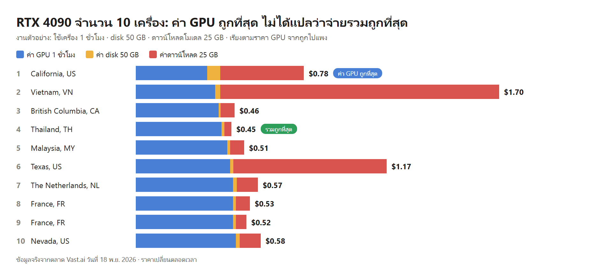
ผลวันที่ 18 พ.ย. 2026: พบ 41 เครื่องที่ผ่านเงื่อนไข · ราคาในตลาดเปลี่ยนตลอดเวลา ผลของคุณจะไม่เหมือนนี้
เครื่องที่ ค่า GPU ถูกที่สุด (California $0.33/ชม.) จ่ายรวม $0.78 เพราะค่าดาวน์โหลด 25 GB แพงกว่าค่า GPU ทั้งชั่วโมง
เครื่องที่ จ่ายรวมถูกที่สุด (Thailand $0.45) อยู่อันดับ 4 ของราคา GPU
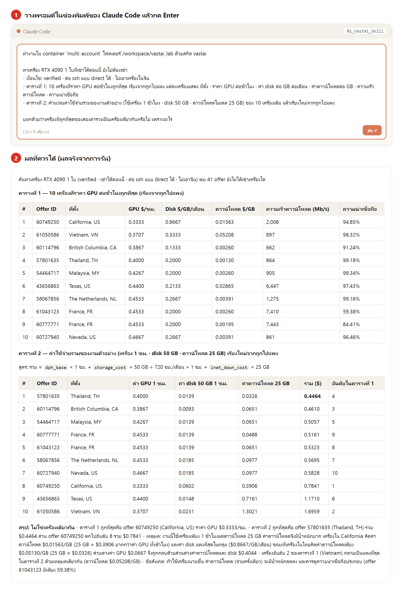
คลิกภาพเพื่อดูทั้งภาพผลวันที่ 18 พ.ย. 2026: พบ 41 เครื่องที่ผ่านเงื่อนไข · ราคาในตลาดเปลี่ยนตลอดเวลา ผลของคุณจะไม่เหมือนนี้
แก้ในพรอมต์: เอาเฉพาะเครื่องในสหรัฐอเมริกา
แก้ในพรอมต์: เปลี่ยน 10 เครื่อง เป็น 20 เครื่อง
แก้ในพรอมต์: เปลี่ยน RTX 4090 เป็น RTX 5090 หรือ RTX 3090
แก้ในพรอมต์: เปลี่ยน 1 ชั่วโมง เป็น 24 ชั่วโมง แล้วดูว่าอันดับเปลี่ยนหรือไม่
แก้ในพรอมต์: เพิ่มเงื่อนไข ความเร็วดาวน์โหลดมากกว่า 2000 Mbps
แก้ในพรอมต์: เพิ่มเงื่อนไข ความน่าเชื่อถือมากกว่า 99%
ทำงานใน container `multi-account` โฟลเดอร์ /workspace/vastai_lab ด้วยสกิล vastai
ทดลองขีดจำกัดของการค้นหาเครื่อง ยังไม่ต้องเช่า
1. ค้น RTX 4090 1 ใบ โดยไม่ใส่เงื่อนไขอื่น 3 แบบ: ไม่กำหนดจำนวน · ขอ 100 เครื่อง · ขอ 1000 เครื่อง แต่ละแบบได้กี่เครื่อง
2. ค้นแบบขอ 1000 เครื่องซ้ำ 3 ครั้ง ได้จำนวนเท่ากันทุกครั้งหรือไม่
3. ค้นทุกรุ่น GPU (ไม่ระบุรุ่น) แบบขอ 1000 และ 10000 เครื่อง เพื่อดูว่าการค้นครั้งเดียวได้สูงสุดกี่เครื่อง
4. กลับมาที่ RTX 4090 เติมเงื่อนไขทีละข้อแล้วนับจำนวนที่เหลือ: เช่าได้ตอนนี้ → verified → ต่อ ssh แบบ direct ได้ → ไม่เอาจีน → ความน่าเชื่อถือมากกว่า 99% → ราคารวมไม่เกิน $0.50/ชม.
5. บอกเงื่อนไขที่ใช้ค้นได้ทั้งหมด จัดเป็นกลุ่ม
สรุปเป็นตารางของแต่ละข้อ แล้วบอกข้อควรระวังเมื่อผลการค้นถูกตัดจำนวน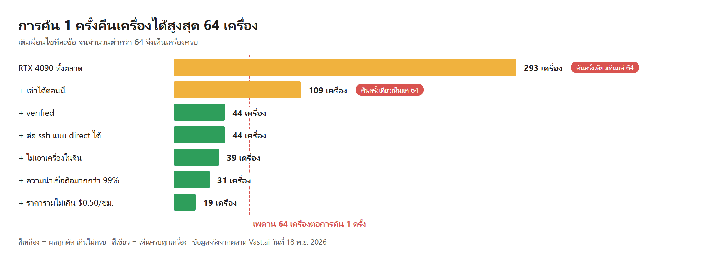
ผลวันที่ 18 พ.ย. 2026 · จำนวนเครื่องในตลาดเปลี่ยนตลอดเวลา
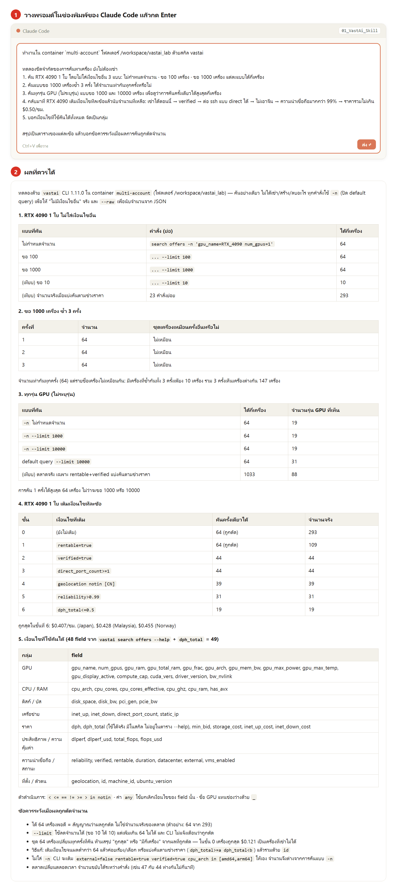
คลิกภาพเพื่อดูทั้งภาพผลวันที่ 18 พ.ย. 2026 · จำนวนเครื่องในตลาดเปลี่ยนตลอดเวลา
ทำงานใน container `multi-account` โฟลเดอร์ /workspace/vastai_lab ด้วยสกิล vastai
หาเครื่องที่มี RTX 4090 4 ใบในเครื่องเดียว (verified · เช่าได้ตอนนี้) แสดง 5 เครื่องที่ถูกที่สุด
แล้วเทียบราคาต่อใบกับเครื่อง RTX 4090 1 ใบที่ถูกที่สุด 5 เครื่อง
สรุปว่าแบบไหนถูกกว่าต่อใบ ยังไม่ต้องเช่า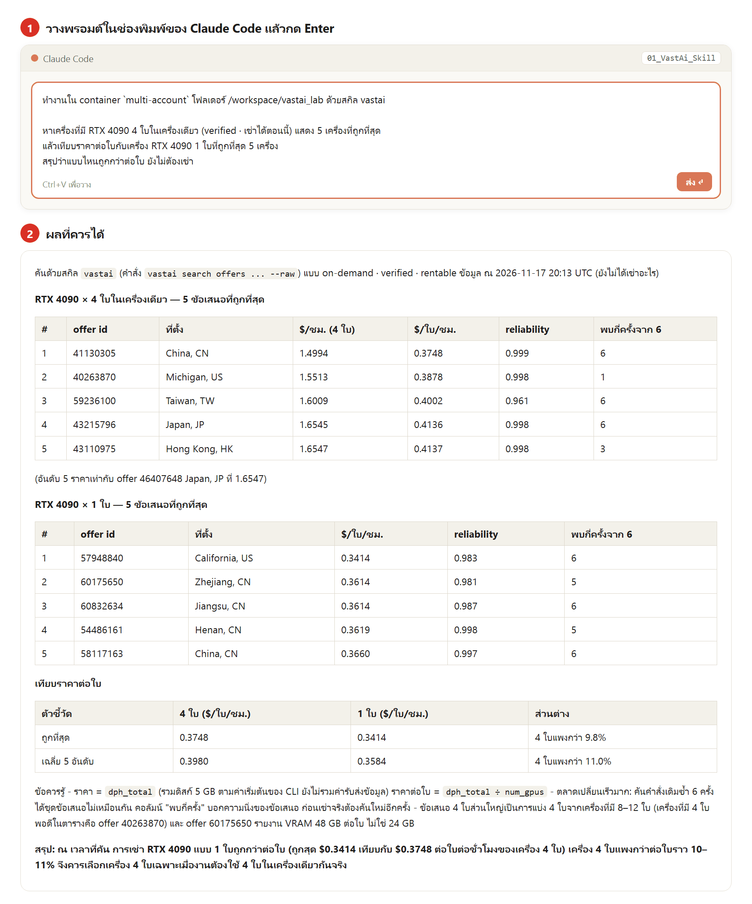
คลิกภาพเพื่อดูทั้งภาพทำงานใน container `multi-account` โฟลเดอร์ /workspace/vastai_lab ด้วยสกิล vastai
ถ้าจะเช่า RTX 4090 4 เครื่องมาทำงานร่วมกันเป็นคลัสเตอร์
- Vast.ai และสกิลนี้มีอะไรให้ใช้บ้าง เช่น คำสั่งกลุ่ม cluster หรือเครือข่ายระหว่างเครื่อง
- ตอนนี้มีเครื่องที่อยู่ data center เดียวกันให้เช่าครบ 4 เครื่องหรือไม่
ตอบจากคำสั่งและข้อมูลจริงเท่านั้น อะไรที่ทำไม่ได้ให้บอกตรง ๆ ยังไม่ต้องเช่า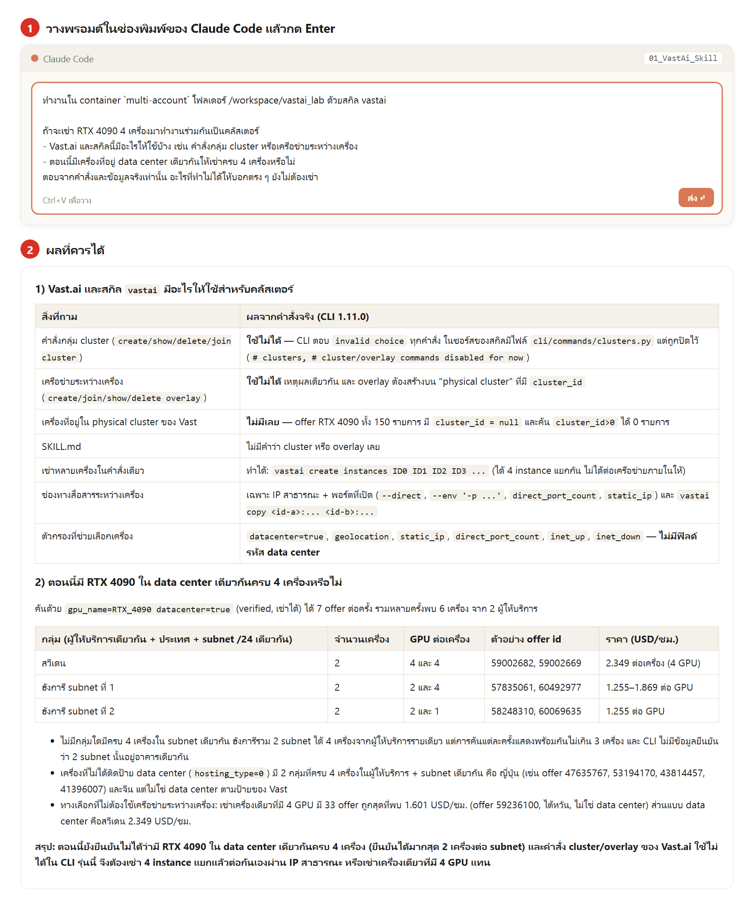
คลิกภาพเพื่อดูทั้งภาพทำงานใน container `multi-account` โฟลเดอร์ /workspace/vastai_lab ด้วยสกิล vastai
เทียบราคาเช่าแบบปกติกับแบบ interruptible ของ RTX 4090 1 ใบ (verified) จาก 10 เครื่องที่ถูกที่สุด
ถูกลงกี่เปอร์เซ็นต์ และแบบ interruptible เสี่ยงอะไร ยังไม่ต้องเช่า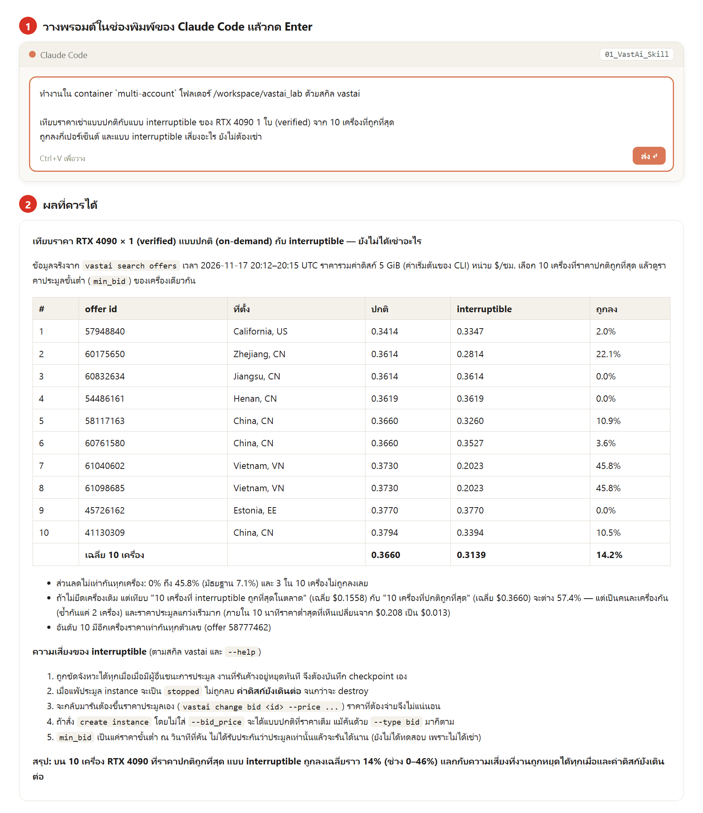
คลิกภาพเพื่อดูทั้งภาพทำงานใน container `multi-account` โฟลเดอร์ /workspace/vastai_lab ด้วยสกิล vastai
มีงานเทรนที่ใช้ RTX 4090 1 ใบ 8 ชั่วโมง ถ้าแบ่งเป็น 4 เครื่องทำพร้อมกันเครื่องละ 2 ชั่วโมง
คำนวณจากราคาจริงตอนนี้: ค่าใช้จ่ายรวมและเวลาที่ใช้ของทั้งสองแบบ
โดยทุกเครื่องต้องดาวน์โหลดข้อมูล 100 GB และใช้ disk 150 GB
สรุปเป็นตารางเทียบ ยังไม่ต้องเช่า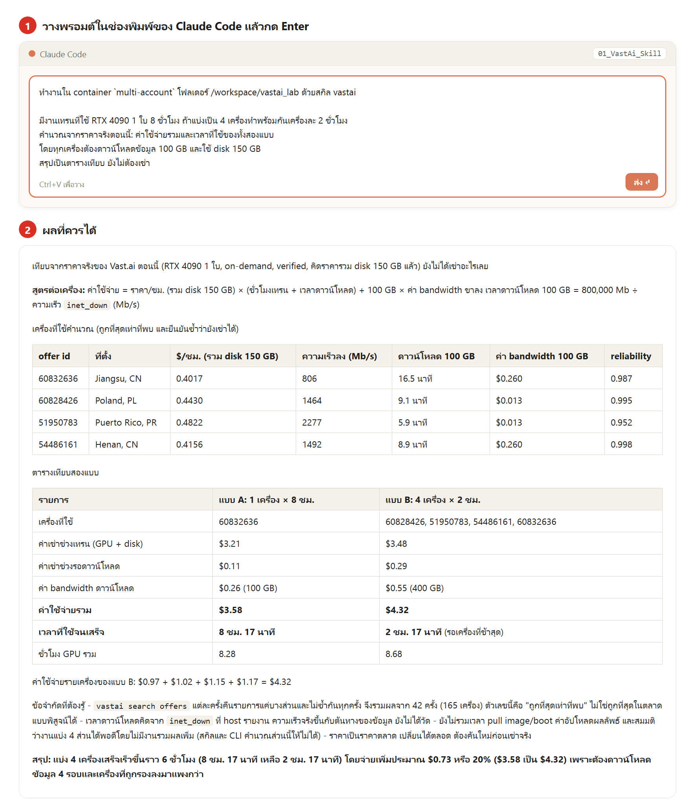
คลิกภาพเพื่อดูทั้งภาพทำงานใน container `multi-account` โฟลเดอร์ /workspace/vastai_lab ด้วยสกิล vastai
มีงบ $5 ต้องการใช้ GPU 10 ชั่วโมง (verified · เช่าได้ตอนนี้)
แนะนำ 5 ตัวเลือกที่คุ้มที่สุดจาก GPU ทุกรุ่น บอกรุ่น · VRAM · ราคารวมต่อชั่วโมง · เหตุผลที่คุ้ม
ยังไม่ต้องเช่า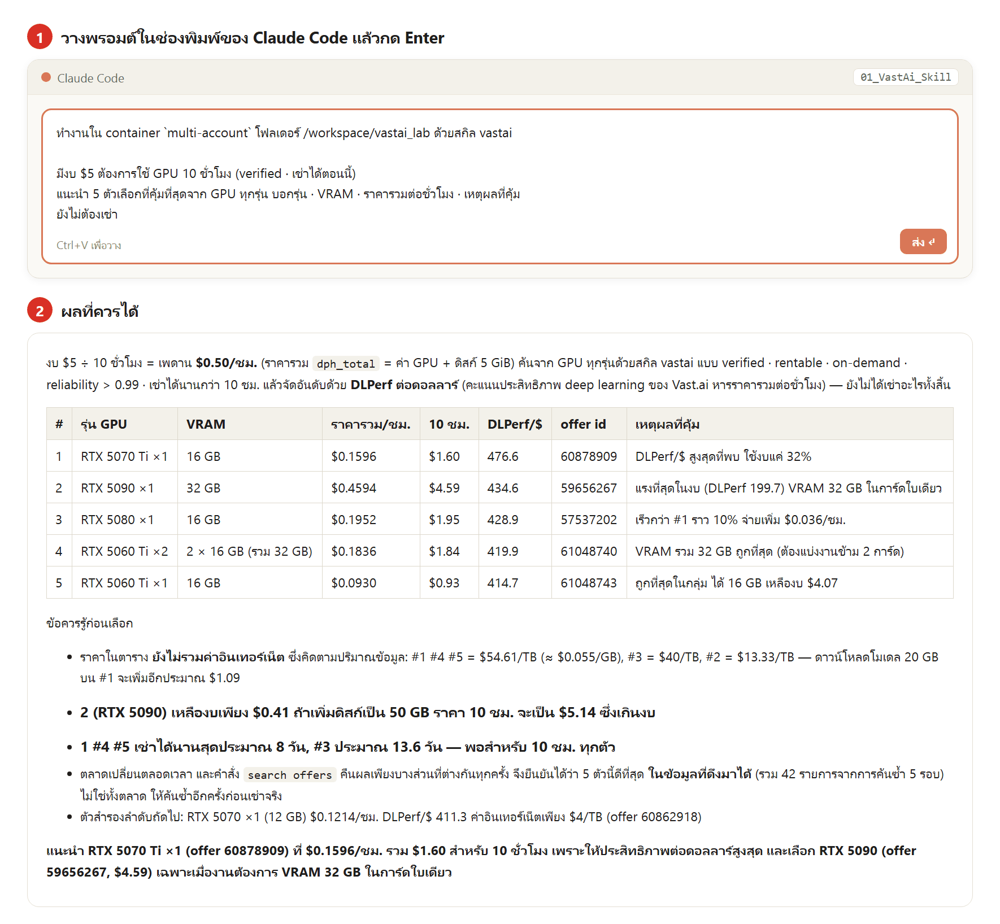
คลิกภาพเพื่อดูทั้งภาพLAB นี้เสียเงินจริง (ประมาณ $0.02 ถ้าลบเครื่องภายใน 5 นาที) · มี 2 พรอมต์ และต้องทำให้ครบทั้งสองในรอบเดียว
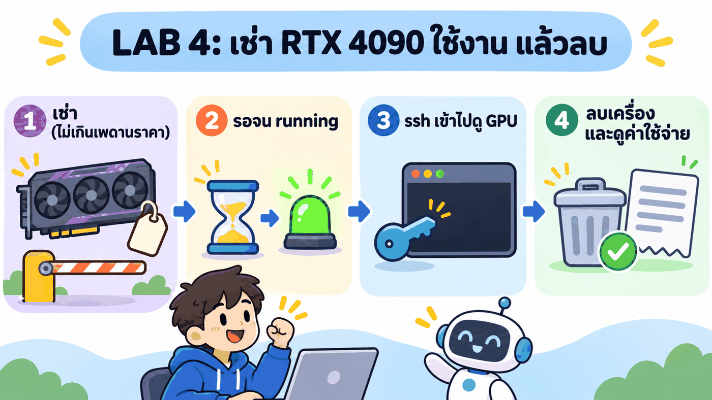
ทำงานใน container `multi-account` โฟลเดอร์ /workspace/vastai_lab ด้วยสกิล vastai
เช่า RTX 4090 1 เครื่อง ตั้งชื่อ lab-4090
- ราคารวมไม่เกิน $0.70/ชม. ถ้าไม่มีเครื่องในราคานี้ให้หยุดแล้วถามฉัน ห้ามขึ้นราคาเอง
- เลือกเครื่อง verified ที่ต่อ ssh แบบ direct ได้ และราคาถูกที่สุด · disk 20 GB
- รอจนเครื่อง running แล้ว ssh เข้าไปรัน nvidia-smi และ vast-capabilities ด้วยกุญแจ Devtool_SSH/devtoolSSH
- ถ้าเครื่องไม่พร้อมใน 10 นาที ให้ลบแล้วเช่าเครื่องอื่น
สรุปเป็นตาราง: GPU · ราคาต่อชั่วโมง · ที่ตั้ง · คำสั่ง ssh · ผล nvidia-smi
ห้ามลบเครื่องจนกว่าฉันจะสั่ง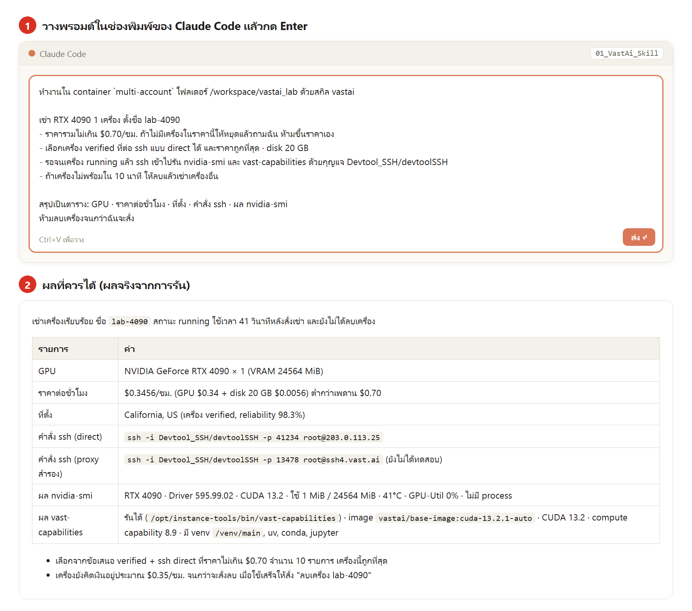
คลิกภาพเพื่อดูทั้งภาพใช้เวลาประมาณ 2 นาที · IP และ port ในภาพเป็นค่าตัวอย่าง ของคุณจะไม่เหมือนนี้
RTX 4090 และหน่วยความจำ 24564MiB = คำสั่งรันบนเครื่องที่เช่าจริง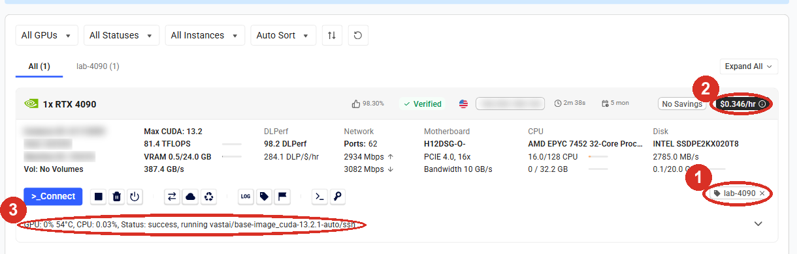
ภาพจริง: ① ป้าย lab-4090 = เครื่องที่ AI เช่าให้ · ② ราคาต่อชั่วโมง · ③ สถานะ running · IP และเลขประจำเครื่องถูกเบลอ
ทำงานใน container `multi-account` โฟลเดอร์ /workspace/vastai_lab ด้วยสกิล vastai
ลบเครื่อง lab-4090 ตรวจว่าไม่มีเครื่องค้างในบัญชี แล้วสรุปค่าใช้จ่ายของเครื่องนี้Total: 0 instances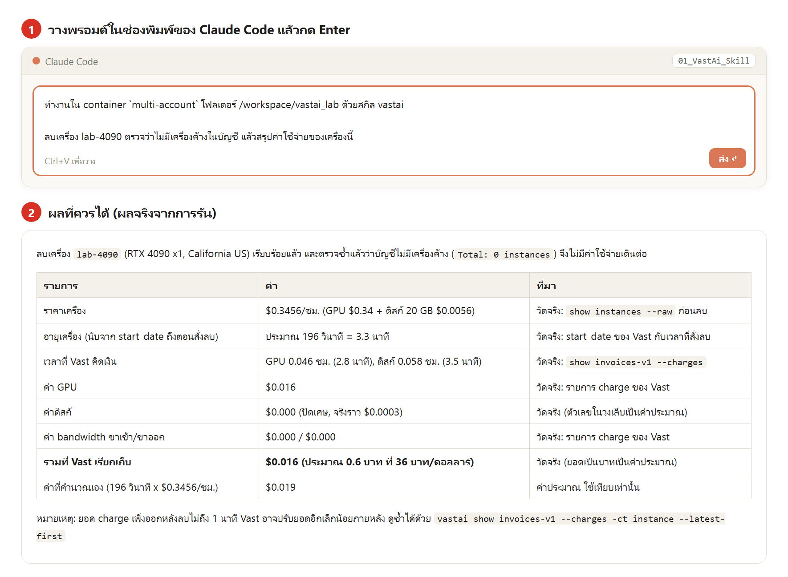
คลิกภาพเพื่อดูทั้งภาพเครื่องเปิดอยู่ 3.3 นาที · Vast.ai เรียกเก็บ $0.016
LAB นี้เสียเงินจริง ประมาณ $0.9 ต่อชั่วโมง ตลอดเวลาที่เครื่องเปิด · ทำ LAB 5 แล้วต้องทำต่อจนถึง LAB 7 ในรอบเดียว
vastai รู้แค่เรื่อง Vast.ai — สกิลเช่าเครื่องและ ssh ได้ แต่ไม่รู้ว่า NInfer ติดตั้งอย่างไร ต้องมีคนบอกสูตร คือไฟล์ข้อความธรรมดา chatbot/NINFER_RECIPE.md ที่เขียนขั้นตอนให้ AI อ่านแล้วทำตาม
| ส่วนของสูตร | บอก AI ว่าอะไร | ที่มา |
|---|---|---|
| ตารางโมเดล | ไฟล์ไหน อยู่ที่ไหน ชื่อใน API คืออะไร | หน้าโมเดลของ neroued บน Hugging Face |
| เงื่อนไขของเครื่อง | GPU รุ่นไหน image อะไร disk เท่าไร | README และ Dockerfile ของ NInfer |
| คำสั่ง build | ติดตั้งอะไร build ด้วยคำสั่งไหน | README ของ NInfer |
| คำสั่งเปิด server | เปิดด้วยค่าอะไร | เอกสาร docs/serving.md ของ NInfer |
| กติกา | ห้ามเกินเพดานราคา · ห้ามแสดง key · มีได้ครั้งละ 1 เครื่อง | ข้อกำหนดของบทเรียนนี้ เพื่อกันเสียเงินเกินและกัน key หลุด |
MODELโมเดลที่จะรัน เลือกจากตารางในสูตร
LABELชื่อเครื่องบน Vast.ai
MAX_DPHเพดานราคารวมต่อชั่วโมง
MODEL=qwen3.8-27b-nvfp4 LABEL=lab-5090 MAX_DPH=1.20ทำงานใน container `multi-account` โฟลเดอร์ /workspace/vastai_lab ด้วยสกิล vastai
เปิด AI server ตามสูตรในไฟล์ chatbot/NINFER_RECIPE.md ของโฟลเดอร์ปัจจุบัน
MODEL=qwen3.8-27b-nvfp4 LABEL=lab-5090 MAX_DPH=1.20MAX_DPH=1.20qwen3.8-27b-nvfp4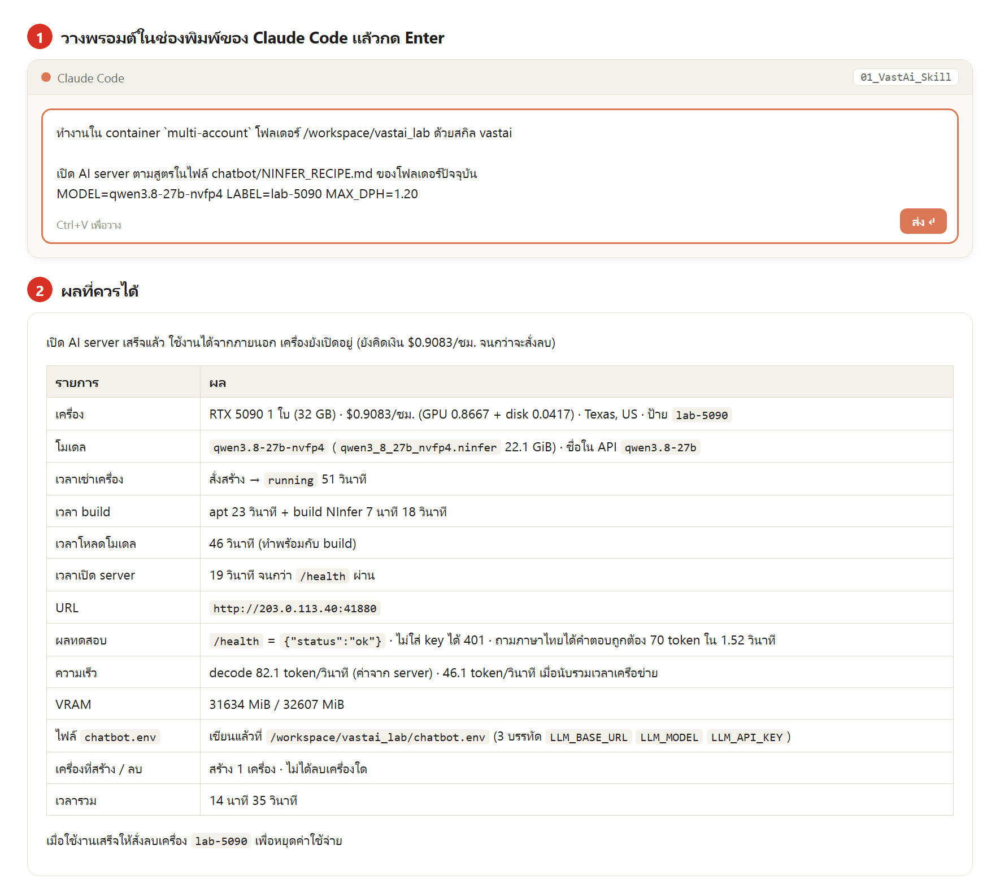
คลิกภาพเพื่อดูทั้งภาพใช้เวลาประมาณ 15 นาที · URL ในภาพเป็นค่าตัวอย่าง
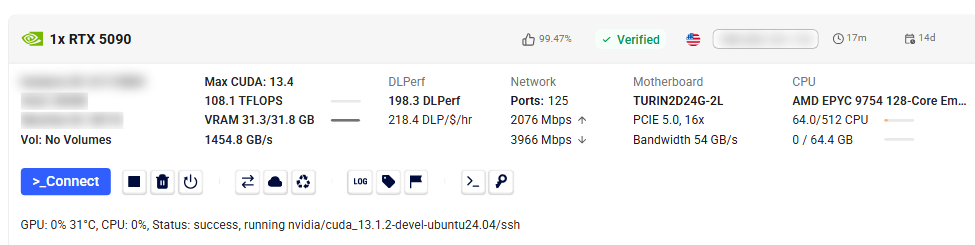
หน้า Instances ระหว่างที่ server ทำงาน: VRAM ถูกใช้ 31.3 จาก 31.8 GB · IP และเลขประจำเครื่องถูกเบลอ
LAB นี้ให้ AI นำไปเปิดใน container ต่อกับ AI server ของ LAB 5 แล้วทดสอบเหมือนลูกค้าจริง 26 เคส
ตัวอย่าง: พิมพ์ "ร้านเปิดกี่โมงถึงกี่โมงคะ"
ตัวอย่าง: กดปุ่ม "ดูราคา"
ตัวอย่าง: กดปุ่ม "โปรโมชัน"
ตัวอย่าง: กดปุ่ม "จองคิว" แล้วให้ข้อมูลทีละอย่าง: ชื่อ มานี ใจดี / เบอร์ 089-555-1234 / นวดไทยแผนโบราณ / วันที่ 2026-12-25 เวลา 15:00
ตัวอย่าง: พิมพ์ "ขอสูตรต้มยำกุ้งหน่อยได้ไหมคะ"
ตัวอย่าง: พิมพ์ "นวดไทยกับนวดน้ำมันอโรมาต่างกันยังไงคะ"
chatbot/e2e/cases.json · โค้ดแชทบอทและชุดทดสอบเตรียมไว้ให้แล้วในโฟลเดอร์ chatbot/ทำงานใน container `multi-account` โฟลเดอร์ /workspace/vastai_lab
เปิดแชทบอทร้านค้า แล้วทดสอบกับ AI server ที่เปิดไว้
1. คัดลอกโฟลเดอร์ chatbot จากโฟลเดอร์ปัจจุบันเข้าไปที่ /workspace/vastai_lab/chatbot (ไม่เอา node_modules)
2. ตั้งค่าแชทบอทให้ใช้ค่าเชื่อมต่อใน /workspace/vastai_lab/chatbot.env แล้วเปิดแชทบอทตาม chatbot/frontend/README.md
3. รันชุดทดสอบ 26 เคสตาม chatbot/e2e/README.md
4. คัดลอกผล (TEST_REPORT.md · results.json · โฟลเดอร์ gifs) กลับมาไว้ที่โฟลเดอร์ chatbot_result ในโฟลเดอร์ปัจจุบัน
ห้ามแสดงค่า key
สรุปเป็นตาราง: เคส | ลูกค้าทำอะไร | ผล แล้วบอกเคสที่ไม่ผ่านพร้อมเหตุผลchatbot_result/ ของโฟลเดอร์ปัจจุบันchatbot_result/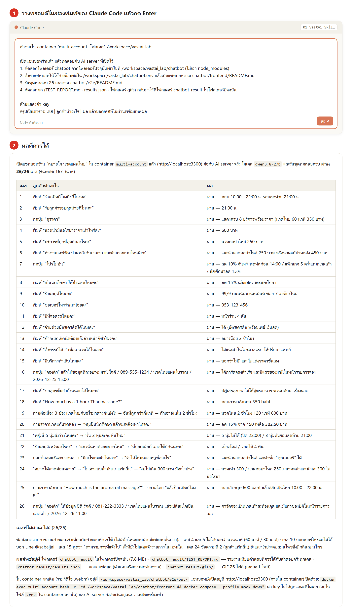
คลิกภาพเพื่อดูทั้งภาพใช้เวลาประมาณ 6 นาที · ผลอยู่ในโฟลเดอร์ chatbot_result/ ของโฟลเดอร์ปัจจุบัน
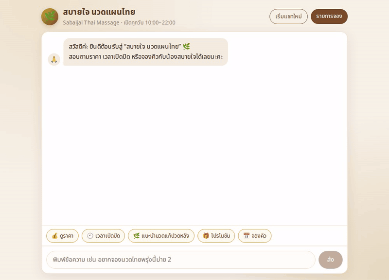
กดปุ่ม "ดูราคา"
ต้องมี บาท และ 350
รายการบริการทั้งหมดพร้อมราคา เช่น นวดไทยแผนโบราณ 60 นาที 350 บาท
กดปุ่ม "จองคิว" แล้วให้ข้อมูลทีละอย่าง: ชื่อ มานี ใจดี / เบอร์ 089-555-1234 / นวดไทยแผนโบราณ / วันที่ 2026-12-25 เวลา 15:00
เห็นการ์ดจองสำเร็จ และหน้ารายการจองมีแถวของ มานี
สรุปการจอง มานี ใจดี นวดไทยแผนโบราณ 2026-12-25 15:00 จองสำเร็จ
สรุปการจองคิว
ชื่อ: มานี ใจดี
เบอร์โทร: 089-555-1234
บริการ: นวดไทยแผนโบราณ 60 นาที
วันและเวลา: 2026-12-25 15:00
พิมพ์ "นวดแก้ปวดหลังราคาเท่าไหร่คะ" → พิมพ์ "หนูเป็นนักศึกษา แล้วจะเหลือเท่าไหร่คะ"
คำตอบสุดท้ายต้องมี 382 หรือ 383
ลด 15% จาก 450 บาท เหลือ 382.50 บาทค่ะ (แสดงบัตรนักศึกษา)
สำหรับนักศึกษาลด 15% จาก 450 บาท เหลือ 382.50 บาทค่ะ
บอกราคาถูก แต่ไม่ได้บอกเวลาของบริการ
บอกเบอร์โทร แต่ไม่ได้บอก Line ของร้าน
ลูกค้าบอกว่าแพ้กลิ่น แต่ข้อความกลางบทสนทนายังแนะนำประคบสมุนไพร
ห้ามข้าม — เครื่อง RTX 5090 คิดเงินทุกนาทีจนกว่าจะถูกลบ
ทำงานใน container `multi-account` โฟลเดอร์ /workspace/vastai_lab ด้วยสกิล vastai
ปิดทุกอย่างของบทนี้
1. ลบเครื่อง lab-5090 แล้วตรวจว่าไม่มีเครื่องค้างในบัญชี
2. ปิดแชทบอทที่เปิดไว้ใน /workspace/vastai_lab/chatbot/frontend (เก็บข้อมูลการจองไว้)
3. สรุปค่าใช้จ่ายของเครื่อง lab-5090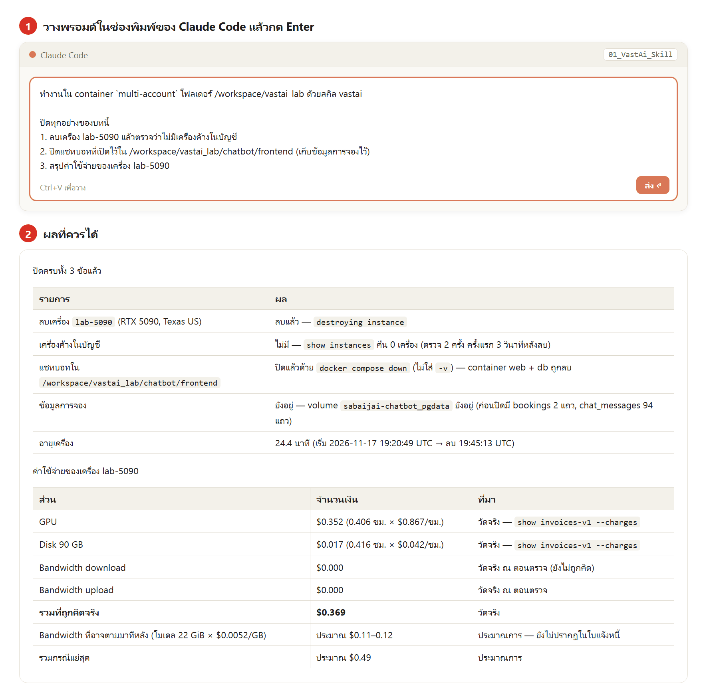
คลิกภาพเพื่อดูทั้งภาพเครื่องเปิดอยู่ 24.4 นาที · Vast.ai เรียกเก็บ $0.369
ผลของทุก LAB · ข้อควรจำ · แบบฝึกหัด
| LAB | สิ่งที่ได้ | ค่าใช้จ่ายของรอบตัวอย่าง |
|---|---|---|
| 1–2 | สกิล vastai ของ Vast.ai พร้อมใช้ใน container | ฟรี |
| 3 | รู้ว่าราคามี 3 ส่วน · การค้น 1 ครั้งเห็นได้สูงสุด 64 เครื่อง · ถามตลาดด้วยสถานการณ์จริง 5 แบบ | ฟรี |
| 4 | เช่า RTX 4090 → ssh → ลบเครื่อง | $0.016 |
| 5–7 | AI server บน RTX 5090 + แชทบอทที่ผ่าน 26/26 เคส แล้วปิดทุกอย่าง | $0.369 |
แต่ละข้อมาจากผลของ LAB · รายละเอียดอยู่ในสไลด์ถัดไป
stop ยังเสียค่า disk · destroy เท่านั้นที่หยุดจ่ายทำ LAB 3 ใหม่ด้วยเงื่อนไขของตัวเอง แล้วอธิบายว่าทำไมเครื่องที่เลือกจึงคุ้มที่สุดสำหรับงานของคุณ
ทำ LAB 5 ด้วย MODEL=qwen3.6-35b-a3b แล้วเทียบความเร็วกับผลในบทนี้
เพิ่มเคสทดสอบของตัวเอง 2 เคสใน chatbot/e2e/cases.json ที่คิดว่าบอทจะตอบผิด แล้วรัน LAB 6 ใหม่
แก้ข้อมูลร้านใน chatbot/frontend/db/init.sql เป็นร้านของตัวเอง แล้วดูว่าบอทตอบตามข้อมูลใหม่หรือไม่
destroy เท่านั้นที่หยุดจ่ายรายละเอียดเต็มของบทนี้: readme.md
สูตรของ LAB 5: chatbot/NINFER_RECIPE.md · เคสทดสอบของ LAB 6: chatbot/e2e/cases.json
ทำงานใน container `multi-account` โฟลเดอร์ /workspace/vastai_lab (ถ้ายังไม่มีให้สร้าง) ก่อนเริ่ม ดูว่าใน container มีสกิล vastai หรือไม่ - Claude: /root/ai-accounts/.Claude/shared/skills - Codex: /root/ai-accounts/.Codex/shared/skills ติดตั้งเฉพาะสิ่งที่ยังไม่มี ตามคู่มือของ Vast.ai (https://docs.vast.ai/guides/get-started/agents) 1. สกิล vastai: npx skills add vast-ai/vast-cli --skill vastai -y แล้วคัดลอกโฟลเดอร์สกิลไปไว้ใน path ทั้งสองข้างบน 2. คำสั่ง vastai (CLI): curl -fsSL https://vast.ai/install.sh | bash 3. คำสั่ง ssh: apt-get install -y openssh-client สรุปเป็นตาราง: รายการ | ผล (มีอยู่แล้ว / เพิ่งติดตั้ง / ติดตั้งไม่ได้) | เวอร์ชันหรือ path
ทำงานใน container `multi-account` โฟลเดอร์ /workspace/vastai_lab ด้วยสกิล vastai ตั้งค่าบัญชี Vast.ai ให้พร้อมเช่าเครื่อง 1. API key: ใช้ค่า VAST_API_KEY จากไฟล์ .env ในโฟลเดอร์ปัจจุบัน ตั้งด้วย vastai set api-key ห้ามแสดงค่า key 2. กุญแจ SSH: คัดลอกโฟลเดอร์ Devtool_SSH จากโฟลเดอร์ปัจจุบันเข้าไปที่ /workspace/vastai_lab แล้วตรวจว่า public key นี้ลงทะเบียนกับบัญชีแล้ว ถ้ายังให้ลงทะเบียน 3. ตรวจบัญชี: เครดิตคงเหลือ และเครื่องที่เปิดค้างอยู่ สรุปเป็นตาราง: รายการ | ผล ห้ามแสดงอีเมล key หรือ token
ทำงานใน container `multi-account` โฟลเดอร์ /workspace/vastai_lab ด้วยสกิล vastai หาเครื่อง RTX 4090 1 ใบที่เช่าได้ตอนนี้ ยังไม่ต้องเช่า - เงื่อนไข: verified · ต่อ ssh แบบ direct ได้ · ไม่เอาเครื่องในจีน - ตารางที่ 1: 10 เครื่องที่ราคา GPU ต่อชั่วโมงถูกที่สุด เรียงจากถูกไปแพง แต่ละเครื่องแสดง ที่ตั้ง · ราคา GPU ต่อชั่วโมง · ค่า disk ต่อ GB ต่อเดือน · ค่าดาวน์โหลดต่อ GB · ความเร็วดาวน์โหลด · ความน่าเชื่อถือ - ตารางที่ 2: คำนวณค่าใช้จ่ายรวมของงานตัวอย่าง (ใช้เครื่อง 1 ชั่วโมง · disk 50 GB · ดาวน์โหลดโมเดล 25 GB) ของ 10 เครื่องเดิม แล้วเรียงใหม่จากถูกไปแพง บอกด้วยว่าเครื่องที่ถูกที่สุดของสองตารางเป็นเครื่องเดียวกันหรือไม่ เพราะอะไร
ทำงานใน container `multi-account` โฟลเดอร์ /workspace/vastai_lab ด้วยสกิล vastai ทดลองขีดจำกัดของการค้นหาเครื่อง ยังไม่ต้องเช่า 1. ค้น RTX 4090 1 ใบ โดยไม่ใส่เงื่อนไขอื่น 3 แบบ: ไม่กำหนดจำนวน · ขอ 100 เครื่อง · ขอ 1000 เครื่อง แต่ละแบบได้กี่เครื่อง 2. ค้นแบบขอ 1000 เครื่องซ้ำ 3 ครั้ง ได้จำนวนเท่ากันทุกครั้งหรือไม่ 3. ค้นทุกรุ่น GPU (ไม่ระบุรุ่น) แบบขอ 1000 และ 10000 เครื่อง เพื่อดูว่าการค้นครั้งเดียวได้สูงสุดกี่เครื่อง 4. กลับมาที่ RTX 4090 เติมเงื่อนไขทีละข้อแล้วนับจำนวนที่เหลือ: เช่าได้ตอนนี้ → verified → ต่อ ssh แบบ direct ได้ → ไม่เอาจีน → ความน่าเชื่อถือมากกว่า 99% → ราคารวมไม่เกิน $0.50/ชม. 5. บอกเงื่อนไขที่ใช้ค้นได้ทั้งหมด จัดเป็นกลุ่ม สรุปเป็นตารางของแต่ละข้อ แล้วบอกข้อควรระวังเมื่อผลการค้นถูกตัดจำนวน
ทำงานใน container `multi-account` โฟลเดอร์ /workspace/vastai_lab ด้วยสกิล vastai หาเครื่องที่มี RTX 4090 4 ใบในเครื่องเดียว (verified · เช่าได้ตอนนี้) แสดง 5 เครื่องที่ถูกที่สุด แล้วเทียบราคาต่อใบกับเครื่อง RTX 4090 1 ใบที่ถูกที่สุด 5 เครื่อง สรุปว่าแบบไหนถูกกว่าต่อใบ ยังไม่ต้องเช่า
ทำงานใน container `multi-account` โฟลเดอร์ /workspace/vastai_lab ด้วยสกิล vastai ถ้าจะเช่า RTX 4090 4 เครื่องมาทำงานร่วมกันเป็นคลัสเตอร์ - Vast.ai และสกิลนี้มีอะไรให้ใช้บ้าง เช่น คำสั่งกลุ่ม cluster หรือเครือข่ายระหว่างเครื่อง - ตอนนี้มีเครื่องที่อยู่ data center เดียวกันให้เช่าครบ 4 เครื่องหรือไม่ ตอบจากคำสั่งและข้อมูลจริงเท่านั้น อะไรที่ทำไม่ได้ให้บอกตรง ๆ ยังไม่ต้องเช่า
ทำงานใน container `multi-account` โฟลเดอร์ /workspace/vastai_lab ด้วยสกิล vastai เทียบราคาเช่าแบบปกติกับแบบ interruptible ของ RTX 4090 1 ใบ (verified) จาก 10 เครื่องที่ถูกที่สุด ถูกลงกี่เปอร์เซ็นต์ และแบบ interruptible เสี่ยงอะไร ยังไม่ต้องเช่า
ทำงานใน container `multi-account` โฟลเดอร์ /workspace/vastai_lab ด้วยสกิล vastai มีงานเทรนที่ใช้ RTX 4090 1 ใบ 8 ชั่วโมง ถ้าแบ่งเป็น 4 เครื่องทำพร้อมกันเครื่องละ 2 ชั่วโมง คำนวณจากราคาจริงตอนนี้: ค่าใช้จ่ายรวมและเวลาที่ใช้ของทั้งสองแบบ โดยทุกเครื่องต้องดาวน์โหลดข้อมูล 100 GB และใช้ disk 150 GB สรุปเป็นตารางเทียบ ยังไม่ต้องเช่า
ทำงานใน container `multi-account` โฟลเดอร์ /workspace/vastai_lab ด้วยสกิล vastai มีงบ $5 ต้องการใช้ GPU 10 ชั่วโมง (verified · เช่าได้ตอนนี้) แนะนำ 5 ตัวเลือกที่คุ้มที่สุดจาก GPU ทุกรุ่น บอกรุ่น · VRAM · ราคารวมต่อชั่วโมง · เหตุผลที่คุ้ม ยังไม่ต้องเช่า
ทำงานใน container `multi-account` โฟลเดอร์ /workspace/vastai_lab ด้วยสกิล vastai เช่า RTX 4090 1 เครื่อง ตั้งชื่อ lab-4090 - ราคารวมไม่เกิน $0.70/ชม. ถ้าไม่มีเครื่องในราคานี้ให้หยุดแล้วถามฉัน ห้ามขึ้นราคาเอง - เลือกเครื่อง verified ที่ต่อ ssh แบบ direct ได้ และราคาถูกที่สุด · disk 20 GB - รอจนเครื่อง running แล้ว ssh เข้าไปรัน nvidia-smi และ vast-capabilities ด้วยกุญแจ Devtool_SSH/devtoolSSH - ถ้าเครื่องไม่พร้อมใน 10 นาที ให้ลบแล้วเช่าเครื่องอื่น สรุปเป็นตาราง: GPU · ราคาต่อชั่วโมง · ที่ตั้ง · คำสั่ง ssh · ผล nvidia-smi ห้ามลบเครื่องจนกว่าฉันจะสั่ง
ทำงานใน container `multi-account` โฟลเดอร์ /workspace/vastai_lab ด้วยสกิล vastai ลบเครื่อง lab-4090 ตรวจว่าไม่มีเครื่องค้างในบัญชี แล้วสรุปค่าใช้จ่ายของเครื่องนี้
ทำงานใน container `multi-account` โฟลเดอร์ /workspace/vastai_lab ด้วยสกิล vastai เปิด AI server ตามสูตรในไฟล์ chatbot/NINFER_RECIPE.md ของโฟลเดอร์ปัจจุบัน MODEL=qwen3.8-27b-nvfp4 LABEL=lab-5090 MAX_DPH=1.20
ทำงานใน container `multi-account` โฟลเดอร์ /workspace/vastai_lab เปิดแชทบอทร้านค้า แล้วทดสอบกับ AI server ที่เปิดไว้ 1. คัดลอกโฟลเดอร์ chatbot จากโฟลเดอร์ปัจจุบันเข้าไปที่ /workspace/vastai_lab/chatbot (ไม่เอา node_modules) 2. ตั้งค่าแชทบอทให้ใช้ค่าเชื่อมต่อใน /workspace/vastai_lab/chatbot.env แล้วเปิดแชทบอทตาม chatbot/frontend/README.md 3. รันชุดทดสอบ 26 เคสตาม chatbot/e2e/README.md 4. คัดลอกผล (TEST_REPORT.md · results.json · โฟลเดอร์ gifs) กลับมาไว้ที่โฟลเดอร์ chatbot_result ในโฟลเดอร์ปัจจุบัน ห้ามแสดงค่า key สรุปเป็นตาราง: เคส | ลูกค้าทำอะไร | ผล แล้วบอกเคสที่ไม่ผ่านพร้อมเหตุผล
ทำงานใน container `multi-account` โฟลเดอร์ /workspace/vastai_lab ด้วยสกิล vastai ปิดทุกอย่างของบทนี้ 1. ลบเครื่อง lab-5090 แล้วตรวจว่าไม่มีเครื่องค้างในบัญชี 2. ปิดแชทบอทที่เปิดไว้ใน /workspace/vastai_lab/chatbot/frontend (เก็บข้อมูลการจองไว้) 3. สรุปค่าใช้จ่ายของเครื่อง lab-5090